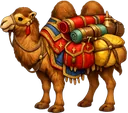
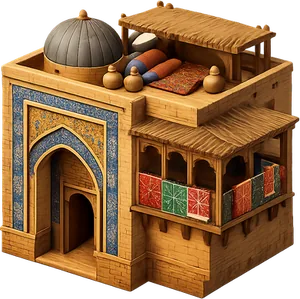
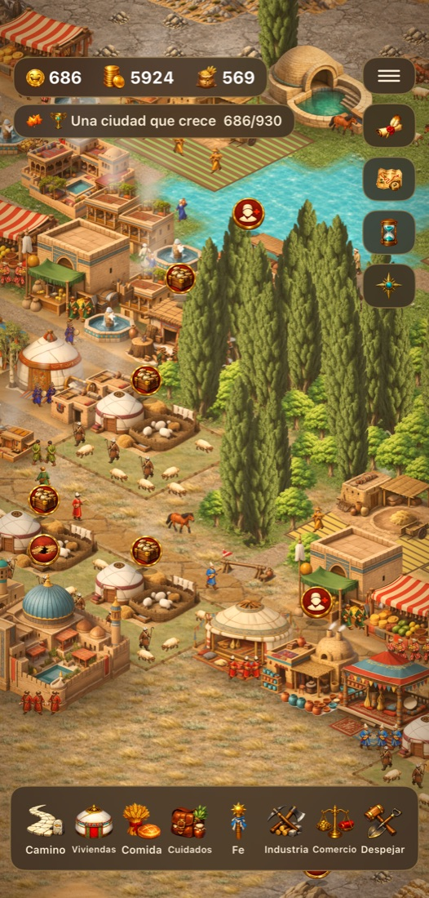
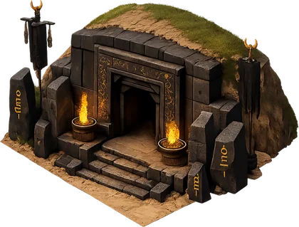
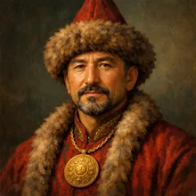
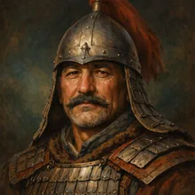
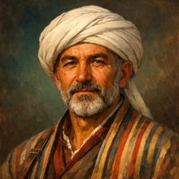
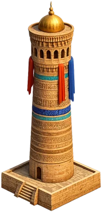

Guía a quince familias a través de la estepa.
Levántales un imperio en la Ruta de la Seda.
English · Русский · Türkçe · Deutsch · Français · Español
Fiel al espíritu de los grandes juegos de construcción de ciudades y ambientado entre las yurtas, los caravasares y las cúpulas turquesa de Asia Central. Cada camino, cada pozo y cada altar tiene su razón de ser.
Apacienta ovejas, siembra trigo, saca piedra de la cantera y hierro de la mina. Convierte la lana en fieltro, la arcilla en cerámica y los capullos en seda.

Cinco grandes ciudades, y cada una ansía mercancías distintas. Vende a tus puertas o envía tus propios camellos hacia el este en busca de un precio mejor.
Con comida, agua, bendiciones y escuela, tu pueblo pasa de las tiendas de fieltro a las mansiones con torre de viento, y el campamento se convierte en capital.
Los hogares solo prosperan cuando tienen lo que necesitan. Lleva agua, luego comida, después la bendición de un chamán, un curandero, relatos y música, una escuela, un hammam y una calle tranquila y verde, y verás crecer cada casa.





Aguadores, chamanes, narradores y recaudadores recorren tus calles, y cada hogar por el que pasan queda atendido. Los niños juegan, las mujeres traen agua del pozo y el humo sube de cada fogón.
Cada dios quiere altares en proporción al tamaño de tu ciudad. Convierte un altar en santuario y luego en templo, o celebra una gran fiesta en su nombre.

Señor del azul infinito que cubre la estepa.

Guardiana de los hogares, las madres y los niños.

Amo de todo cuanto yace bajo la tierra.

Las caravanas llegan por turnos desde las grandes ciudades, y cada una paga un cincuenta por ciento más por lo que más desea. Guarda tu seda para Samarcanda, vende tu fieltro a Bujará en invierno y nunca satures el mercado.
Tus consejeros vigilan los graneros, los dioses, el tesoro y a los bandidos del horizonte, y te dicen sin rodeos qué necesita la ciudad.
 Visir BekzatConsejero principal
Visir BekzatConsejero principal
Enviado AltynbekEl Gran Kan Anciana AigerimEl pueblo
Anciana AigerimEl pueblo Chamán KökbörüLos dioses
Chamán KökbörüLos dioses
Capitán TemirSeguridad
YusufCaravanero
Pide caballos, fieltro u oro para sus guerras. Envíaselos y asciende de anciano del clan a su mano derecha. Niégaselos tres veces y su ejército cabalgará contra ti.
Crece lo suficiente y se desbloquearán los edificios más grandiosos. Después tendrás que pagarlos en monedas, piedra y madera.

Sus profesores llevan el saber a los mejores hogares.

Los tres dioses, venerados bajo el cielo abierto.

Más recaudación y un pueblo más orgulloso. Solo uno por ciudad.

La maravilla de tu ciudad, alzada piedra a piedra en cuatro etapas a lo largo de los años.
Una campaña que va de un primer campamento de yurtas a la Horda de Oro, entre largos inviernos, tierras de bandidos y el año de la peste. O funda tu propio kanato en La Estepa Infinita, con metas que nunca se acaban.


Gratis para empezar: el tutorial y el primer relato de la campaña son tuyos, juega todo lo que quieras. Una sola compra abre toda la Ruta de la Seda, tuya para siempre. Tu ciudad se guarda sola en tu teléfono y no hay que registrarse en nada.